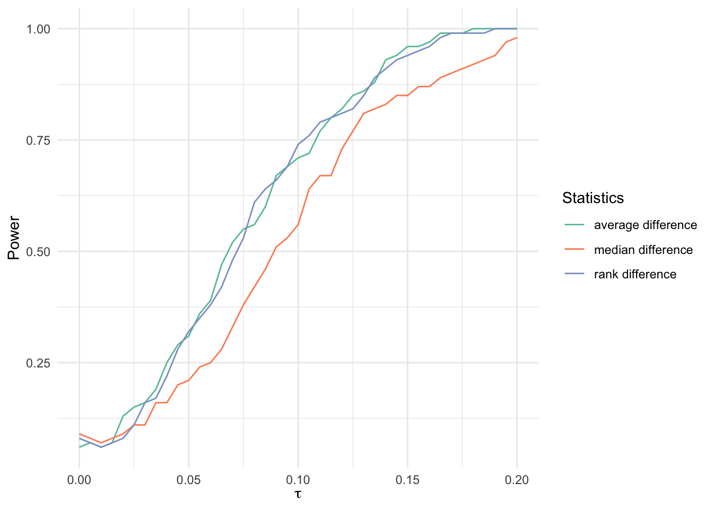
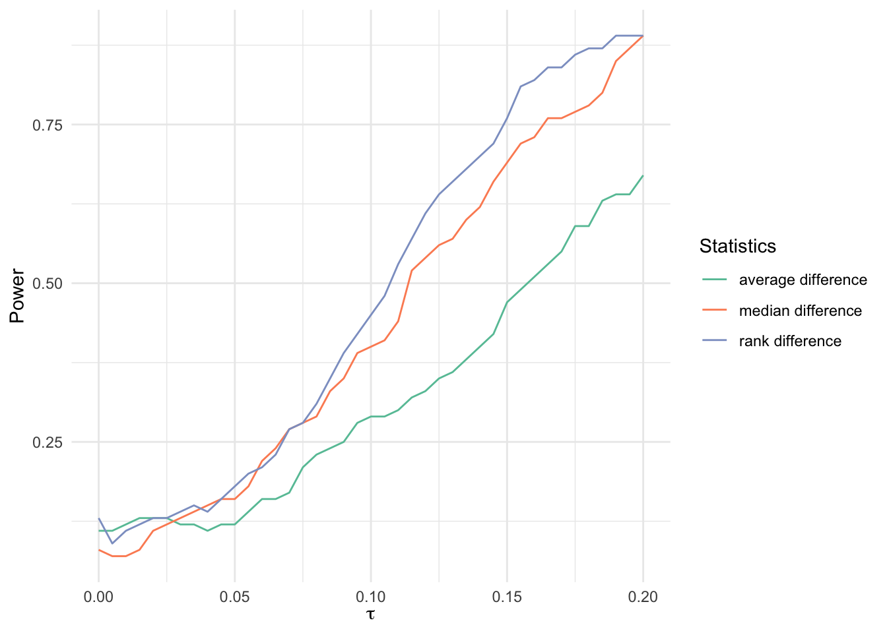
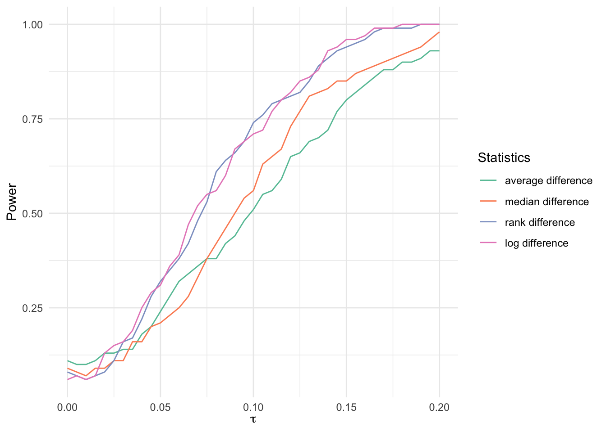

# Install and load packages ---------------
packages <- c(
"tidyverse",
"forcats",
"latex2exp",
"grid",
"gridExtra",
"scales",
"haven",
"kableExtra",
"magrittr"
)
# Change to install = TRUE to install the required packages
pacman::p_load(packages, character.only = TRUE)Nt <- 1000
Nc <- 1000
N <- Nt + Nc
K <- 1000
B <- 100
get_permutated_diff <- function(i, random_permutation, Y_obs, multiplicative = FALSE) {
random_permutation_i <- random_permutation %>% pull(i)
permutated_diff_1 <- abs(mean(Y_obs[random_permutation_i]) - mean(Y_obs[-random_permutation_i]))
permutated_diff_2 <- abs(median(Y_obs[random_permutation_i]) - median(Y_obs[-random_permutation_i]))
permutated_diff_3 <- abs(mean(rank(Y_obs)[random_permutation_i]) - mean(rank(Y_obs)[-random_permutation_i]))
if (multiplicative == FALSE) {
return(c(permutated_diff_1, permutated_diff_2, permutated_diff_3))
} else {
permutated_diff_4 <- abs(mean(log(Y_obs)[random_permutation_i]) - mean(log(Y_obs)[-random_permutation_i]))
return(c(permutated_diff_1, permutated_diff_2, permutated_diff_3, permutated_diff_4))
}
}
tau_seq <- seq(0, 0.2, by = 0.005)p_lt_10_mat_1_normal <- matrix(0, nrow = B, ncol = length(tau_seq))
p_lt_10_mat_2_normal <- matrix(0, nrow = B, ncol = length(tau_seq))
p_lt_10_mat_3_normal <- matrix(0, nrow = B, ncol = length(tau_seq))
for (b in seq(B)) {
set.seed(b)
# Actual assignment in a trial b
actual_treatment = sample(N, Nt, replace = FALSE)
# Distribution of potential outcomes
Y0 <- rnorm(N)
# Random permutation rules
random_permutation <- map(seq(K), ~ sample(N, Nt, replace = FALSE)) %>% bind_cols()
p_lt_10_vec_1 <- rep(0, length(tau_seq))
p_lt_10_vec_2 <- rep(0, length(tau_seq))
p_lt_10_vec_3 <- rep(0, length(tau_seq))
for (i in seq_along(tau_seq)) {
Y_obs <- Y0
Y_obs[actual_treatment] <- Y0[actual_treatment] + tau_seq[i]
permutated_diff <- map(seq(K), ~ get_permutated_diff(., random_permutation, Y_obs)) %>% bind_cols()
actual_diff_1 <- abs(mean(Y_obs[actual_treatment]) - mean(Y_obs[-actual_treatment]))
actual_diff_2 <- abs(median(Y_obs[actual_treatment]) - median(Y_obs[-actual_treatment]))
actual_diff_3 <- abs(mean(rank(Y_obs)[actual_treatment]) - mean(rank(Y_obs)[-actual_treatment]))
p_lt_10_vec_1[i] <- (mean(permutated_diff[1, ] >= actual_diff_1) < 0.10)
p_lt_10_vec_2[i] <- (mean(permutated_diff[2, ] >= actual_diff_2) < 0.10)
p_lt_10_vec_3[i] <- (mean(permutated_diff[3, ] >= actual_diff_3) < 0.10)
p_lt_10_mat_1_normal[b, ] <- p_lt_10_vec_1
p_lt_10_mat_2_normal[b, ] <- p_lt_10_vec_2
p_lt_10_mat_3_normal[b, ] <- p_lt_10_vec_3
}
}bind_rows(
tibble(x = tau_seq, y = colMeans(p_lt_10_mat_1_normal), z = 1),
tibble(x = tau_seq, y = colMeans(p_lt_10_mat_2_normal), z = 2),
tibble(x = tau_seq, y = colMeans(p_lt_10_mat_3_normal), z = 3),
) %>%
ggplot(aes(x = x, y = y, color = factor(z))) +
geom_line() +
scale_color_brewer(
palette = "Set2",
name = "Statistics",
labels = c(
"average difference",
"median difference",
"rank difference"
)
) +
xlab(TeX("$\\tau$")) +
ylab(TeX("Power")) +
theme_minimal()
p_lt_10_mat_1_outlier <- matrix(0, nrow = B, ncol = length(tau_seq))
p_lt_10_mat_2_outlier <- matrix(0, nrow = B, ncol = length(tau_seq))
p_lt_10_mat_3_outlier <- matrix(0, nrow = B, ncol = length(tau_seq))
for (b in seq(B)) {
set.seed(b)
# Actual assignment in a trial b
actual_treatment = sample(N, Nt, replace = FALSE)
# Distribution of potential outcomes
Y0 <- rnorm(N) + rbinom(N, 1, 0.2) * 5
# Random permutation rules
random_permutation <- map(seq(K), ~ sample(N, Nt, replace = FALSE)) %>% bind_cols()
p_lt_10_vec_1 <- rep(0, length(tau_seq))
p_lt_10_vec_2 <- rep(0, length(tau_seq))
p_lt_10_vec_3 <- rep(0, length(tau_seq))
for (i in seq_along(tau_seq)) {
Y_obs <- Y0
Y_obs[actual_treatment] <- Y0[actual_treatment] + tau_seq[i]
permutated_diff <- map(
seq(K), ~ get_permutated_diff(., random_permutation, Y_obs)
) %>%
bind_cols()
actual_diff_1 <- abs(mean(Y_obs[actual_treatment]) - mean(Y_obs[-actual_treatment]))
actual_diff_2 <- abs(median(Y_obs[actual_treatment]) - median(Y_obs[-actual_treatment]))
actual_diff_3 <- abs(mean(rank(Y_obs)[actual_treatment]) - mean(rank(Y_obs)[-actual_treatment]))
p_lt_10_vec_1[i] <- (mean(permutated_diff[1, ] >= actual_diff_1) < 0.10)
p_lt_10_vec_2[i] <- (mean(permutated_diff[2, ] >= actual_diff_2) < 0.10)
p_lt_10_vec_3[i] <- (mean(permutated_diff[3, ] >= actual_diff_3) < 0.10)
p_lt_10_mat_1_outlier[b, ] <- p_lt_10_vec_1
p_lt_10_mat_2_outlier[b, ] <- p_lt_10_vec_2
p_lt_10_mat_3_outlier[b, ] <- p_lt_10_vec_3
}
}bind_rows(
tibble(x = tau_seq, y = colMeans(p_lt_10_mat_1_outlier), z = 1),
tibble(x = tau_seq, y = colMeans(p_lt_10_mat_2_outlier), z = 2),
tibble(x = tau_seq, y = colMeans(p_lt_10_mat_3_outlier), z = 3),
) %>%
ggplot(aes(x = x, y = y, color = factor(z))) +
geom_line() +
scale_color_brewer(
palette = "Set2",
name = "Statistics",
labels = c(
"average difference",
"median difference",
"rank difference"
)
) +
xlab(TeX("$\\tau$")) +
ylab(TeX("Power")) +
theme_minimal()
p_lt_10_mat_1_multiplicative <- matrix(0, nrow = B, ncol = length(tau_seq))
p_lt_10_mat_2_multiplicative <- matrix(0, nrow = B, ncol = length(tau_seq))
p_lt_10_mat_3_multiplicative <- matrix(0, nrow = B, ncol = length(tau_seq))
p_lt_10_mat_4_multiplicative <- matrix(0, nrow = B, ncol = length(tau_seq))
for (b in seq(B)) {
set.seed(b)
# Actual assignment in a trial b
actual_treatment = sample(N, Nt, replace = FALSE)
# Distribution of potential outcomes
Y0 <- exp(rnorm(N))
# Random permutation rules
random_permutation <- map(seq(K), ~ sample(N, Nt, replace = FALSE)) %>% bind_cols()
p_lt_10_vec_1 <- rep(0, length(tau_seq))
p_lt_10_vec_2 <- rep(0, length(tau_seq))
p_lt_10_vec_3 <- rep(0, length(tau_seq))
p_lt_10_vec_4 <- rep(0, length(tau_seq))
for (i in seq_along(tau_seq)) {
Y_obs <- Y0
Y_obs[actual_treatment] <- Y0[actual_treatment] * exp(tau_seq[i])
permutated_diff <- map(
seq(K), ~ get_permutated_diff(., random_permutation, Y_obs, multiplicative = TRUE)
) %>%
bind_cols()
actual_diff_1 <- abs(mean(Y_obs[actual_treatment]) - mean(Y_obs[-actual_treatment]))
actual_diff_2 <- abs(median(Y_obs[actual_treatment]) - median(Y_obs[-actual_treatment]))
actual_diff_3 <- abs(mean(rank(Y_obs)[actual_treatment]) - mean(rank(Y_obs)[-actual_treatment]))
actual_diff_4 <- abs(mean(log(Y_obs)[actual_treatment]) - mean(log(Y_obs)[-actual_treatment]))
p_lt_10_vec_1[i] <- (mean(permutated_diff[1, ] >= actual_diff_1) < 0.10)
p_lt_10_vec_2[i] <- (mean(permutated_diff[2, ] >= actual_diff_2) < 0.10)
p_lt_10_vec_3[i] <- (mean(permutated_diff[3, ] >= actual_diff_3) < 0.10)
p_lt_10_vec_4[i] <- (mean(permutated_diff[4, ] >= actual_diff_4) < 0.10)
p_lt_10_mat_1_multiplicative[b, ] <- p_lt_10_vec_1
p_lt_10_mat_2_multiplicative[b, ] <- p_lt_10_vec_2
p_lt_10_mat_3_multiplicative[b, ] <- p_lt_10_vec_3
p_lt_10_mat_4_multiplicative[b, ] <- p_lt_10_vec_4
}
}bind_rows(
tibble(x = tau_seq, y = colMeans(p_lt_10_mat_1_multiplicative), z = 1),
tibble(x = tau_seq, y = colMeans(p_lt_10_mat_2_multiplicative), z = 2),
tibble(x = tau_seq, y = colMeans(p_lt_10_mat_3_multiplicative), z = 3),
tibble(x = tau_seq, y = colMeans(p_lt_10_mat_4_multiplicative), z = 4),
) %>%
ggplot(aes(x = x, y = y, color = factor(z))) +
geom_line() +
scale_color_brewer(
palette = "Set2",
name = "Statistics",
labels = c(
"average difference",
"median difference",
"rank difference",
"log difference"
)
) +
xlab(TeX("$\\tau$")) +
ylab(TeX("Power")) +
theme_minimal()